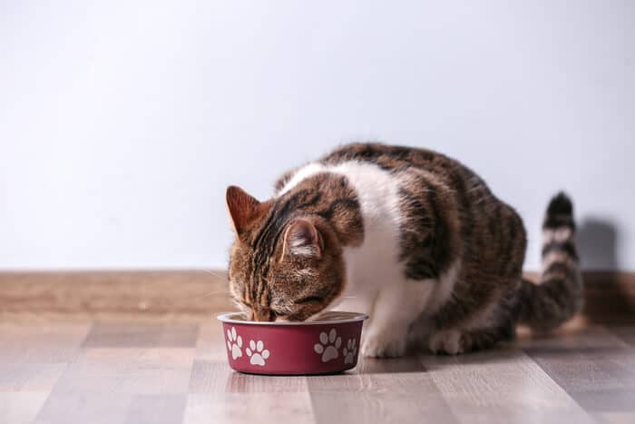

Raw Chicken and Salmon

Raw, just as nature intended for your cat!
Ingredients
- 700g raw chicken wings (bone-in, skin-on)
- 100g raw salmon (with bone)
- 100g raw chicken heart
- 50g raw beef kidney
- 50g raw chicken liver
- 1 whole egg, raw (with shell)
- 1 teaspoon taurine supplement
- 2 cups water
Instructions
- Cut the salmon and organ meats into chunks that will fit through your meat grinder.
- Divide the chicken wings as needed to fit through the grinder.
- Place a bowl under the grinder and feed the meat and organs through.
- Transfer the ground mixture to a large bowl then add the taurine, egg, and water to combine.
- Portion out the mixture and freeze or refrigerate.
Notes: If you don’t have a grinder, you can start by pureeing the organ meats with the egg and water. Cut the chicken wings into pieces and pulse them together with the organ meat puree in a food processor or high-powered blender. If no other option exists, you can chop the ingredients very finely by hand.